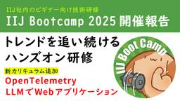
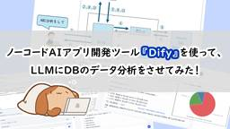

IIJ Engineers Blog
https://eng-blog.iij.ad.jp
IIJ Engineers Blogは、開発・運用の現場から、IIJのエンジニアが技術的な情報や取り組みについて 執筆する公式ブログです。
フィード
IT系アドバンスド・コーヒーマイスターが語る「コーヒーとIT」
IIJ Engineers Blog
【IIJ 2025 TECHアドベントカレンダー 12/13の記事です】 プログラマなる人種の生態と言えば、 コーディングに集中してる時、その傍らにはオフィスコーヒーをなみなみと注いだ自社の周年記念や...
1日前
IIJの品質保証部を紹介します──多様なサービスを支えるQAの取り組み
IIJ Engineers Blog
【IIJ 2025 TECHアドベントカレンダー 12/12の記事です】 はじめまして。IIJでサービス・プロダクトに対する品質保証(QA)を担当する品質保証部で働いている杉浦と申します。 IIJでは...
1日前
Golden Kubestronautになりました
IIJ Engineers Blog
【IIJ 2025 TECHアドベントカレンダー 12/11の記事です】 はじめに こんにちは。SRE推進部の霜鳥です。 2024年に新卒入社し、IIJのサービス共通基盤であるIKE (IIJ K...
3日前

IIJ Bootcamp 2025開催報告 – トレンドを追い続けるハンズオン研修
IIJ Engineers Blog
【IIJ 2025 TECHアドベントカレンダー 12/10の記事です】 トレンドを追い続ける大規模ハンズオン研修 IIJでは毎年、Newcomerを対象とした研修として「IIJ Bootcamp」を...
4日前
sudoをパスワードレス認証で使いたい 183
183
IIJ Engineers Blog
【IIJ 2025 TECHアドベントカレンダー 12/9の記事です】 昨年は「SSHでも二要素認証を使いたい」のタイトルでご紹介したSSHで二要素認証を利用する方法が好評だったので、今年はsudoを...
5日前

ノーコードAIアプリ開発ツール『Dify』を使って、LLMにDBのデータ分析をさせてみた！ 4
IIJ Engineers Blog
【IIJ 2025 TECHアドベントカレンダー 12/8の記事です】 始めに こんにちは。九州支社営業推進課に所属する白川です。 普段はプリセールスエンジニアとして、IIJサービスや生成AI活用の提...
6日前
ChatGPT と Copilot、どちらが優秀か勝負させてみた 7
IIJ Engineers Blog
【IIJ 2025 TECHアドベントカレンダー 12/7の記事です】 ChatGPT と Copilot、どちらも大変優秀で心強い味方です。 ふと、会社からの帰り道に「ChatGPT と Copil...
6日前

3Dプリンタで小型DC “DX edge” の模型を作る
IIJ Engineers Blog
【IIJ 2025 TECHアドベントカレンダー 12/6の記事です】 DX edge / マイクロデータセンター(Zella DC) 時折記事になっていることもありますので、なんとなく見たことがある...
9日前
SEIL/x86 AyameでIIJmioひかり10ギガ収容とサーバラック静音化
IIJ Engineers Blog
【IIJ 2025 TECHアドベントカレンダー 12/5の記事です】 IIJの新卒入社向けに社宅の福利厚生があります。社宅は無料インターネットがある代わりに自分で回線を引くことができず、ネットワーク...
9日前
Starlinkの”リアル”を大公開！IIJ主催ソリューションセミナー開催
IIJ Engineers Blog
はじめに IIJは、12/17（水）に「Starlinkソリューションセミナー presented by IIJ～実態解明！Starlinkはどこまで使えるのか？～」を開催します。 本イベントでは、I...
9日前